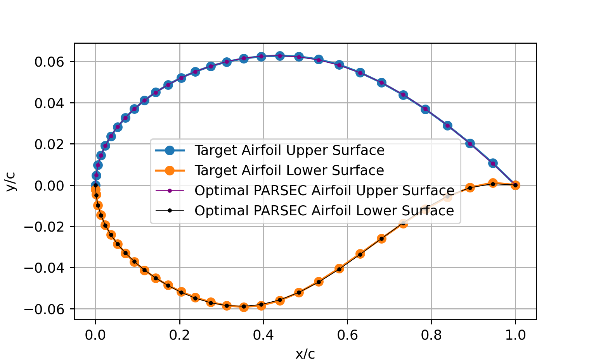

Visualization
visualization.py
This function is used visualize the output of a design space sampling.
The input parameters to the visualization function are:
xu: a N x 1-D list or array where
X=[x_cp1, x_cp2, x_cp3, ..., z_cp1, z_cp2, z_cp3, ...]. The first half of the list are the x-coordinates of the control points, while the second half are the z-coordinates of the control points.zu: an int that specifies the number of points to generate on the upper and lower surfaces
xl: an int that specifies the degree of the BSpline the surface
zl: a 1-D array of non-decreasing knots that control the B-Spline basis functions
The outputs of the BSpline function are:
A 6 x 6 subplot of randomnly selected airfoils from the input arrays
A single plot of all the airfoil, icluding the bounds and mean of all surfaces in the input array
Example: Visualizing the results of using LHS to Sample A PARSEC Design Space
Here’s an example Python code snippet that uses the fits a PARSEC surface to an RAE2822 airfoil, and then uses LHS with bounds that are 150% scale from fitted parameters:
# import packages
from readairfoil import *
from PARSEC_fit import *
import numpy as np
import matplotlib.pyplot as plt
from readairfoil import *
airfoil = 'rae2822' # airfoil .dat name
N = 100 # number of points describing each of the airfoil's upper and lower surfaces
xi = np.arange(N) # generate ascending integers from 0 to 0 to N-1
xdist = 1.0 - np.cos( xi* (np.pi)/2.0/(N - 1.0) ); # generating N-1 x values from 0 to 1 whose distribution follows the formula
xu,zu,xl,zl = readairfoil(airfoil,xdist=xdist) # load airfoil with the following distribution
X = PARSEC_fit(xu,zu,xl,zl,N,xdist) # fit PARSEC surface to airfoil
Below are the resulting plots:
